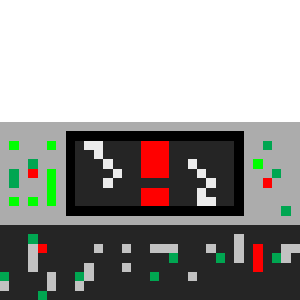

You look around inside your ship and see your navigation system is smashed, causing you to lose any hope of figuring out what planet you are on. You look to your control panel and the damage done does not look like it can be repaired. Should you try to fix it anyway or look around somemore?
